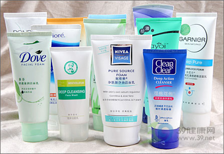
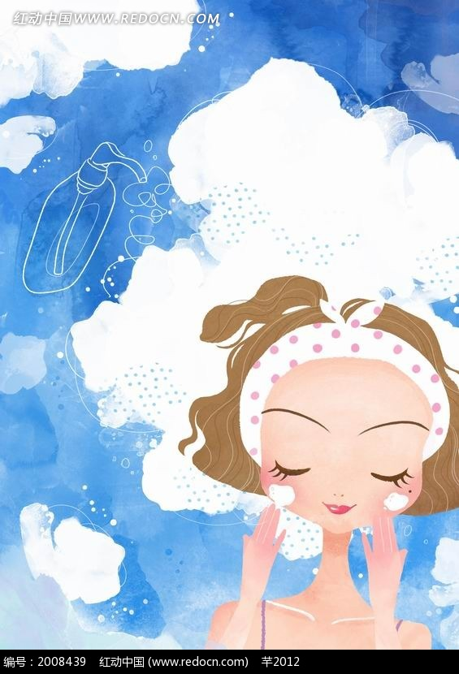

化粧品一般可分為兩大類，一是基礎保養品，專門保養皮膚用；另一類是美容彩粧品，皮膚是身體的最大器官，要讓皮膚維持在最佳狀態，擁有健康的身體是必備的條件，均衡的營養、充分的睡眠、適度的運動、壓力的調適、情緒的放鬆、規律的生活，這些是是保持肌膚青春美麗所必須的。除了內在的健康，外在的保養也相當重要。保養的原則在於保持肌膚適當的水分及油份，促進角質層的新陳代謝，預防黑色素過度的產生。保養的方式包括 （1）正確的清潔卸妝（2）避免日曬（3）適當的保濕滋潤。基礎保養品一般來說有以下幾種：清潔乳:不管是清潔霜、清潔乳或是清潔皂，其主要效用都是用來清潔皮膚。使用時以手指將之均勻地抹在臉上後，以化粧紙擦拭乾淨，或以清水洗淨。
化粧水又分為柔軟化粧水以及收斂性化粧水。柔軟化粧水具有潔淨及柔軟肌膚的万效，可促進皮膚對養分吸收的效果，在洗完臉後使用。使用時倒在化粧棉上，輕輕地在臉上擦拭。而收斂性化粧水的作用是收縮毛孔，在使用乳液後，倒在化粧棉上，輕輕拍打臉部，可使毛孔收縮，皮膚將會更細緻。
這是按摩時專用的用品，它不但能促進肌膚血液循環，還可以增進新陳代謝，保持肌膚年輕。
這類產品可在肌膚上形成保護膜，隔絕與外界污染物的接觸。若已使用乳液則可免用隔離霜。
一般來說可分為日霜及晚霜兩種。日霜的營養成份不比晚霜高，因為白天的時候交感神經作用比較活躍，皮膚的吸收功能比較不完整，而到了晚上，交感神經比較安定，所以可使用營養成份較高的晚霜。
它具有保養皮膚之作用，能在臉上形成一層薄膜，並可折射陽光，而且能使臉上的彩妝化粧更均勻、更持久且不易脫落。
它的作用在於創造理想的膚色。使用時只要以海棉沾取塗抹在臉上即可。依市面販售的產品種類，大致可區分為以下五種：
蜜粉：適合在春、秋兩季時使用，感覺清爽，可固定粧底，使臉部粉嫩細緻，但使用時必須以手指按擦。
粉膏：較濃稠，可掩蓋膚質之瑕疵。適合各種膚質，一年四季均可使用，含油量適中瀏覽。
粉條：含油量較為豐富，適合在冬天或是皮膚特別乾燥時使用。
水粉餅：在夏天專用，大都兼具防水、止汗的功能，可避免肌膚泛出油光。使用時以海棉沾水擦拭，感覺冰涼、清爽，最適合於夏天使用。但較專業的化粧師或瀏覽較講究化粧技巧的消費者，僅將此產品使用於身體或四肢的部位。
兩用水粉餅：兼具粉底、粉餅雙重效果的粉底，當妳來不及上粉底，或是補粧時，它能在短時間內讓妳迅速恢復嬌顏丰采。